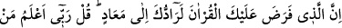
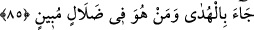
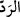
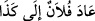
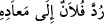
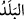

cezâsı da günahın büyüklüğüne ve küçüklüğüne göre azâb görmektir. Dünya sevgisi ve
şehvetleri ise cezâsı, bu şehvetlerin durumuna göre âhiret nimetlerinden mahrûmiyettir.
Şâyet mevki, makam, riyâset ve dünya saltanatı ise cezâsı, zillet ve horluk olup
aşağılara (derekelere) düşmektir. Eğer kötülük, âhiret nimetlerini ve derecelerini taleb
etmekse cezâsı, kemâlattan ve Hak Teâlâ’nın kudretini temâşâdan mahrum kalmaktır.
İlmin kazanımlarından hoşlanma ve aklî mânâlardan zevk duyma ise cezâsı, ilâhî ve
rabbanî ilim ve marifetlerin kendisine keşfolmasından uzak olmaktır. Şâyet talep edilen
şey, vücûdun bakâsı ise cezâsı, Allah’ın cemâl ve celâl sıfatlarının tecellisi ile bakâ
billah ve fenâ fillâhtan mahrum olmaktır.
85. (Rasûlüm!) Kur’an’ı (okumayı, tebliğ etmeyi ve ona uymayı) sana farz kılan
Allah, elbette seni (yine) dönülecek yere döndürecektir. De ki: Rabbim, kimin
hidâyeti getirdiğini ve kimin apaçık bir sapıklık içinde olduğunu en iyi bilendir.
(Rasûlüm!) Kur’an’ı”okuyup tebliğ etmeyi ve onunla ameli “sana farz kılan Allah,
elbette seni” öldükten sonra “(yine) dönülecek yere” yâni evvelkilerin ve sonrakilerin
gıbta edeceği büyük bir yere ve mevkiye, Makâm-ı Mahmûd’a “döndürecektir.
“
” kelimesi, çevirme ve döndürme anlamlarına gelir. Makâm-ı Mahmûd, Allah
Teâlâ’nın Rasûlullah (s.a.)’e bir vaadidir. Dağların bile güç getiremediği risâlet
görevini üstlenip meşakkatlere tahammül göstermesinin ve Kur’ân’ı tebliğ edip onunla
amel etmesinin bir ecir ve mükâfatıdır.
İmam Râğıb Isfahânî, el-Müfredât’ında der ki: “
” kelimesi hakkında sahih olan
anlam, mü’minlerin emirinin işâret ettiği mânâdır. İbn Abbas (r.a.) bunu şu şekilde
zikreder: “
(dönülecek yer)” kelimesi, Allah Teâlâ’nın güç ve kudretiyle Âdem
(a.s.)’ı yarattığı ve kendisini oradan çıkardığı yer olan cennete işâret eder.
Arapça’da bir kimsenin bir yerde daha önce bir geçmişi olmasa da “
(Falan, şuraya döndü)” denilir.
Müfessirlerin çoğuna göre “
(dönülecek yer)”, Mekkedir. Araplar der ki: “
(Falan, memleketine geri döndü)”.
kelimesi burada “
(şehir,
memleket)” anlamında kullanılmıştır. Zira insan yeryüzünde dönüp dolaştıktan sonra
memleketine geri döner.
Âyet, Mekke ile Medine arasında Şam ehlinin (hac için ihrama girdikleri) mikat yeri
olan Cuhfe’de nâzil olmuştur. Molla Fenâri, Fâtiha suresinin tefsirinde belirttiğine
göre bu görüştedir.
Yani, Allah seni, öyle bir yere döndürecektir ki, oradan çıkan herkes yine oraya